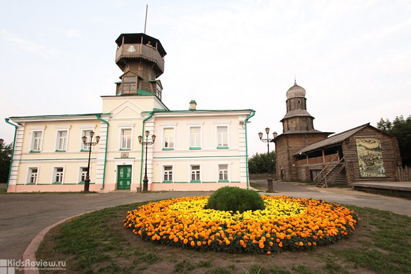
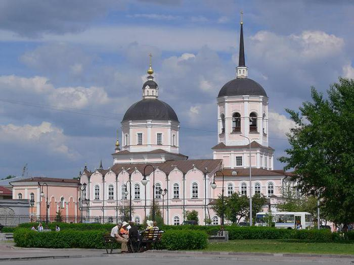
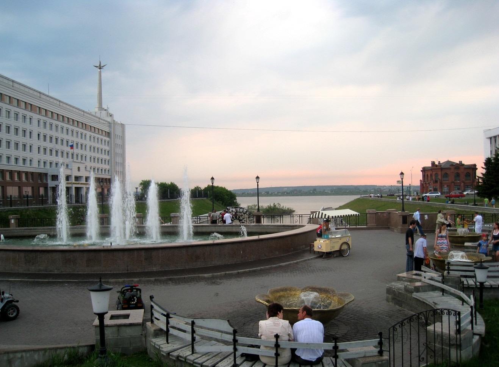

Воскресенская гора и Музей истории Томска
Это сакральное место, где зародился город. На вершине горы расположена каменная Воскресенская церковь (1789–1803 гг.) — выдающийся образец сибирского барокко с богатым фасадом, украшенным пилястрами и кокошниками. Рядом находится Музей истории Томска, расположенный в здании бывшей пожарной части. Главная особенность музея — восстановленная деревянная каланча на крыше, которая служит лучшей смотровой площадкой города.

Университетская роща и Главный корпус ТГУ
Парк, заложенный вместе с университетом в 1885 году. Это настоящий ботанический сад в центре города, где вековые деревья соседствуют с научными корпусами. Главное здание ТГУ построено из кирпича и песчаника в эклектичном стиле. В роще живет большая популяция ручных белок, которые берут орешки прямо из рук студентов и туристов.

Богоявленский кафедральный собор
Один из старейших храмов города (1777–1784 гг.), монументальный памятник сибирского барокко. В советское время здесь располагался цех завода, но в 1990-е собор был полностью восстановлен. Его голубые стены и золотые купола видны издалека и являются архитектурной доминантой центра.

Набережная реки Томи
Современное общественное пространство, протянувшееся вдоль правого берега. Отсюда открывается панорана на Воскресенскую гору и исторический центр. Центральным арт-объектом здесь является памятник-шарж Антону Чехову работы скульптора Леонтия Усова.
